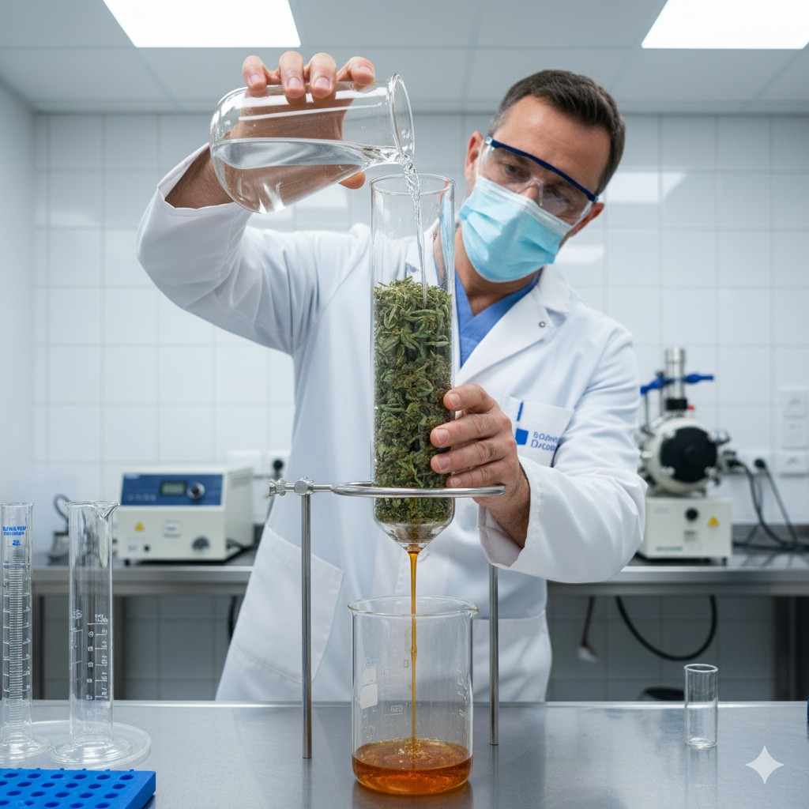

Finally, get the exact flavors and consistent effects you've been searching for. No more guessing games or settling for mass-produced products.
Order My DragonYou bring your finest cannabis and your favorite spirits. You get a one-of-a-kind tincture that captures the true essence of what you love most.
Every sip delivers the same reliable experience, whether you're unwinding after a long day or creating an unforgettable evening with friends.
The Green Dragon Bottling Service transforms your premium flower into liquid perfection using a time-tested extraction method. Unlike mass-produced tinctures, every bottle is handcrafted specifically for you.
I work directly with you to understand exactly what you want – whether that's the mellow relaxation of your favorite indica or the bright energy of a special sativa.
My proprietary extraction process captures the complex terpene profiles that make each strain special. You'll taste the difference in every drop.
No more wondering "will this work tonight?" Every bottle delivers the exact same reliable effects, dose after dose.
Since you provide your own flower and spirits, no two bottles are identical. This is your personal blend, crafted your way.
Stop settling for generic products that don't match your sophisticated taste.
Order My DragonWe begin with your flower personally selected by you for your taste, and your goals. Together, we’ll choose the best alcohol base and flavor direction.
Your chosen flower and spirit are transformed using my time-tested extraction process. Every nuance of flavor and effect is preserved with artisanal precision.
Within 2–3 weeks, but currently wait time is around 72 hours, you’ll receive your handcrafted tincture in a premium glass bottle — ready to enjoy, consistent every single time.